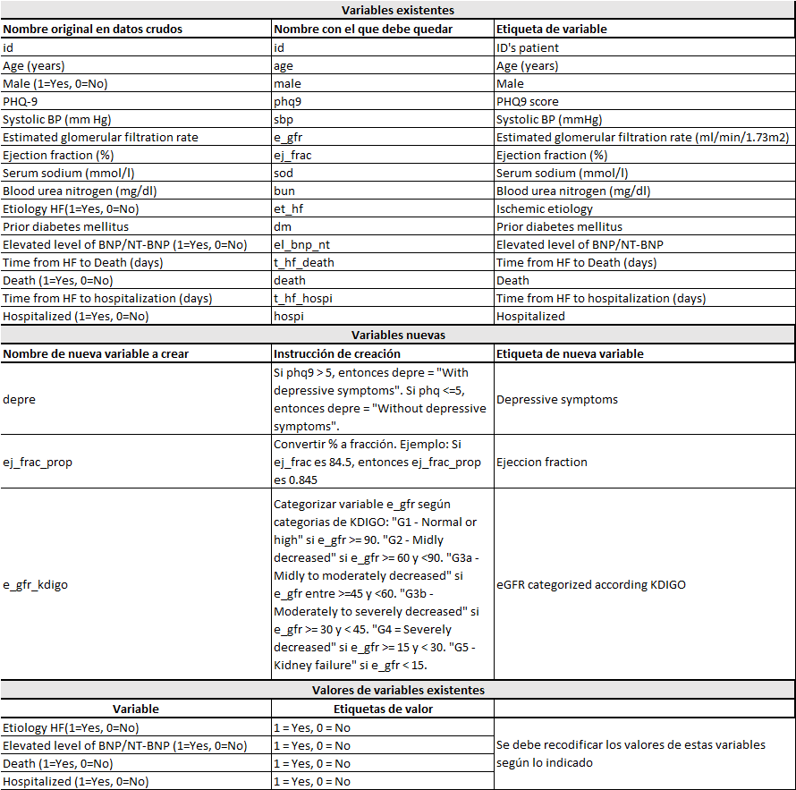

Curso R Aplicado a los Proyectos de Investigación
Problem Set 1
Introducción
Para este problem set 1, procesaremos los datos del artículo titulado “Comorbid Depression and Heart Failure: A Community Cohort Study” y publicado en la revista Plos One (doi: https://journals.plos.org/plosone/article?id=10.1371/journal.pone.0158570).
Hemos modificado ligeramente los datos originales para agregarles algunos problemas que permitan enfrentar problemas de calidad de datos.
En este problem set 1 nos centraremos solo en manejo de datos y análisis incicial de datos incluyendo gráficos. Todos los ejercicios requieren que usted haga algún tipo de comentario personal, ya sea describir los resultados observados o comentar el proceso / razonamiento seguido.
Es importante que se respondan con comentarios, no solo código! La pregunta que no tiene comentarios solo valdrá 25% del puntaje total.
Entregable
Use la plantilla denominada: Problem_Set1_ApellidoPaterno_ApellidoMaterno_Nombre.qmd ubicada en la carpeta compartida Enlace aquí.
Deberá enviar al siguiente correo electrónico una carpeta comprimida o compartida por Drive / Onedrive /Dropbox con los siguientes archivos:
Problem_Set1_ApellidoPaterno_ApellidoMaterno_Nombre.Rproj (configure el proyecto como aprendimos al inicio)
Problem_Set1_ApellidoPaterno_ApellidoMaterno_Nombre.qmd
Problem_Set1_ApellidoPaterno_ApellidoMaterno_Nombre.html (resultado de renderizar)
La carpeta comprimida o compartida por nube (Drive/Onedrive/Dropbox) deberá llamarse según las especificaciones siguientes:
Problem_Set1_ApellidoPaterno_Nombre.
Ejemplo:
Problem_Set1_SotoBecerra_Percy
Se descontará 1 punto por no seguir las instrucciones de nombrado de carpeta.
Se descontará 3 puntos si la carpeta no tiene el archivo .Rproj.
Se descontará 2 puntos si el código en el archivo .qmd no reproduce exactamente lo mostrado en el .html.
Ejercicios
Ejercicio 1: Cargue los paquetes que usará. Comentar con # al lado de cada paquete un resumen breve de para qué lo usarán. Tip: Use library()
Nota: Todos los paquetes que usará deberán estar en este chunk, no en otro chunk posterior
Ejercicio 2: Importe los datos denominados "pone.0158570.s002_modified.xlsx" que se encuentran en la carpeta compartida Enlace aquí. Llame a los datos importados: “datos_crudos”.
Ejercicio 3: Haga un inspección global de los datos
- Dé un vistazo a los datos. Describa brevemente sus resultados.
- Obtenga un resumen global superficial de los datos. Describa brevemente sus resultados.
- Obtenga una descripción un poco más detallada variable por variable de los datos. Describa brevementesus resultados.
Ejercicio 4: Procese los datos según el siguiente diccionario:

En un solo pipeline, haga lo siguiente:
- Renombre variables.
- Recodifique las etiquetas de las variables categóricas.
- Cree las nuevas variables.
- Etiquete a las variables.
# Colocar aquí el pipeline (borrar este comentario)Ejercicio 5: Identifique duplicados
- Identifique duplicados de fila. Describa brevementesus resultados.
- Identifique duplicados de id. Describa brevemente sus resultados.
- Solo si hubo duplicados de fila, elimine los duplicados de fila, quedándose solo con una versión de cada observación. Comente el proceso/razonamiento.
Tip: Puedes usar distinct()
- Solo si hubo duplicados de id, elimine el duplicado de fila que menos información completa tenga. Comente el proceso/razonamiento.
Tip: Puedes usar slice() o filter()
Ejercicio 6: Identifique datos perdidos
- Presente el número de datos perdidos y tasa de completitud variable por variable en una sola salida. Describa los resultados relacionados a datos perdidos.
- Muestre gráficos de datos perdidos y como se agrupan entre variables.Describa los resultados relacionados a datos perdidos.
Ejercicio 7: Haga las siguientes consultas (“queries”) con los datos limpios (renombrados, etiquetados y sin duplicados)
- Seleccione las variables id, age y phq-9. Muestre los participantes que tienen edades entre 50 y 55 años
- Seleccione las variables id, ej_Frac, sod, bun y et_hf. Luego, muestre a los participantes que tiene etiología isquémica.
- ¿Quiénes fueron los pacientes mujeres que sobrevivieron y tuvieron un phq-9 > 10?
- ¿Cuáles fueron los valores de tiempo a muerte en los pacientes varones que murieron, que tuvieron etiología isquémica y un puntaj de phq-9 > 10?
Ejercicio 8: Haga los siguientes gráficos:
- Mediante un gráfico de cajas, compare los valores de ejection fraction (%) entre los pacientes con etiología isquémica versus sin etiología isquémica. Muestre el resultado más simple posible.
- Mediante un gráfico de cajas, compare los valores de ejection fraction (%) entre los pacientes con etiología isquémica versus sin etiología isquémica. Muestre el resultado más elaborado posible: Elija un tema de su agrado, agregue etiquetas (título general, título de eje X, título de eje Y, etiquetas de leyenda si aplica), modifique la escala de colores, etc.
- Use un gráfico de cajas y puntos dispersos (combinelos), para mostrar el nivel de bun según sexo. Muestre el resultado más simple posible.
Tip: use geom_jitter() para los puntos dispersos. Más info aquí: https://ggplot2.tidyverse.org/reference/geom_jitter.html
- Use un gráfico de cajas y puntos (combinelos), para mostrar el nivel de bun según sexo. Muestre el resultado más elaborado posible: Elija un tema de su agrado, agregue etiquetas (título general, título de eje X, título de eje Y, etiquetas de leyenda si aplica), modifique la escala de colores, etc.
Tip: use geom_jitter() para los puntos dispersos. Más info aquí: https://ggplot2.tidyverse.org/reference/geom_jitter.html
Ejercicio 9: Exporte los datos a los siguientes formatos. Llame a los datos exportados: “datos_limpios”
- Formato de R: “.rds”
- Formato de Excel: “.xlsx”
- Formato de archivo plano: “.csv”
- Formato de Stata: “.dta”